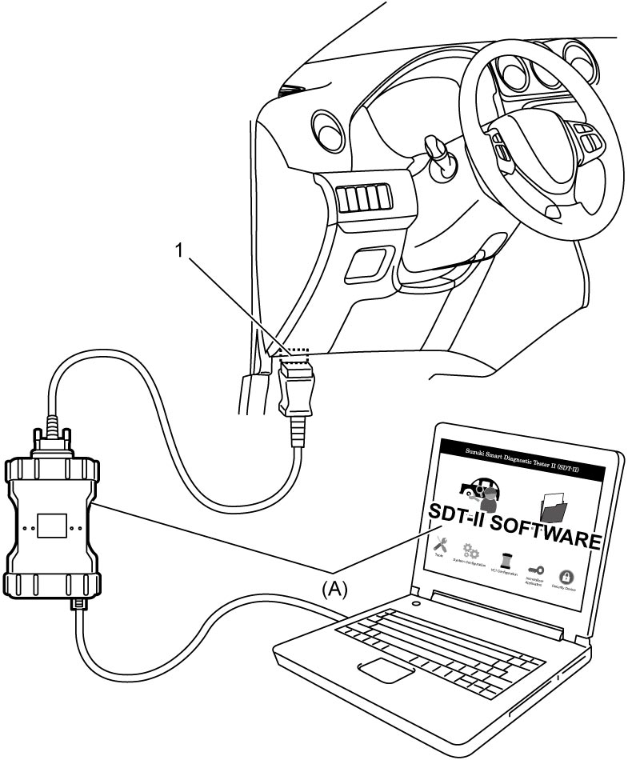

7B
| OBD System Description (Additional Heater System) |
The ECM monitors the condition of the following components and data.
•Additional heater relay
•Backup power supply for ECM
•CAN communication line
•Engine speed signal data
•Ignition power supply voltage data
•Engine coolant temperature signal data
•Outside air temperature signal data
•Electric load current sensor data
•LIN signal (generator) data
•Backup power supply for ECM
•CAN communication line
•Engine speed signal data
•Ignition power supply voltage data
•Engine coolant temperature signal data
•Outside air temperature signal data
•Electric load current sensor data
•LIN signal (generator) data
The ECM also monitors conditions of the system and its circuits with ignition “ON”. When an abnormal condition in the system occurs, DTC is stored in the memory of ECM.
DTC can be checked by SUZUKI scan tool connected to DLC (1).

 "Expand image")